Exploring the harmony between
sound and motion.
sound and motion.
This tool changes music into colorful visuals.
When sound plays, colors and shapes move instantly.
High sounds create bright spots, beats make sharp flashes,
and rhythms draw glowing lines. Everything shifts with the sound. See melodies as blooming patterns,
bass as pulsing waves, and drums as exploding dots.
It works with any sounds: guitars, pianos, synths, voices.
Simple idea: What you hear is what you see.
When sound plays, colors and shapes move instantly.
High sounds create bright spots, beats make sharp flashes,
and rhythms draw glowing lines. Everything shifts with the sound. See melodies as blooming patterns,
bass as pulsing waves, and drums as exploding dots.
It works with any sounds: guitars, pianos, synths, voices.
Simple idea: What you hear is what you see.
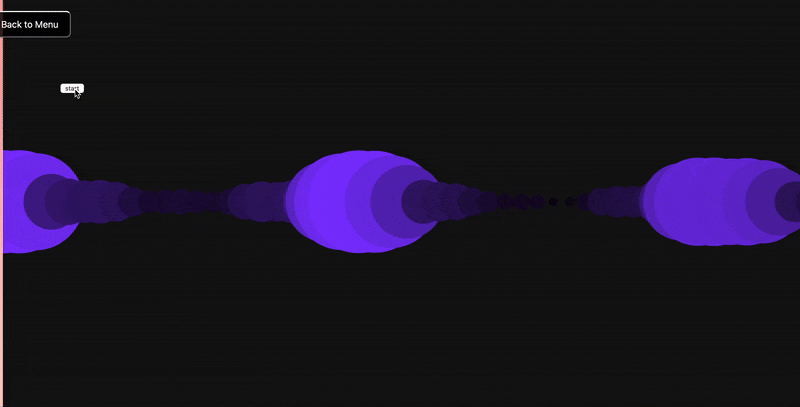
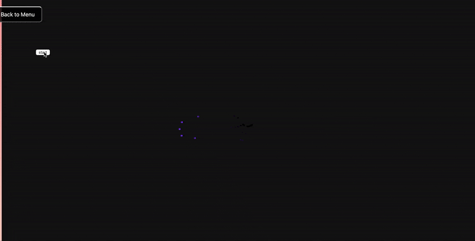
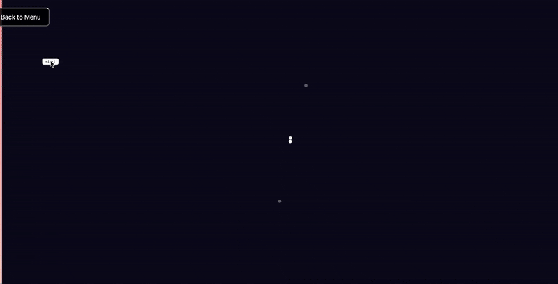
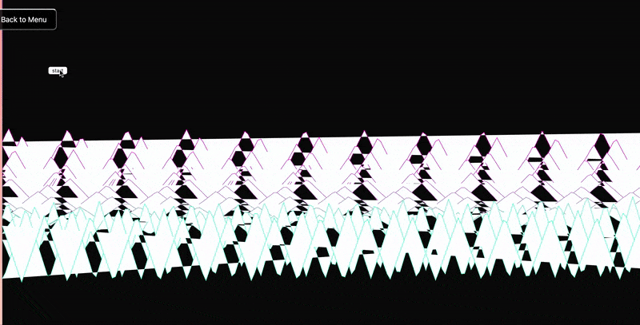

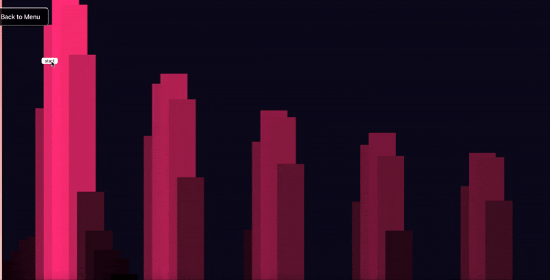
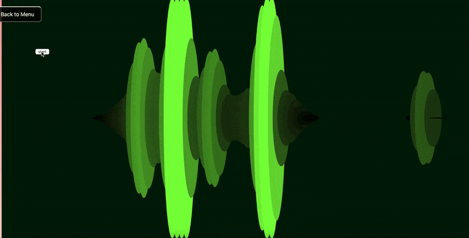


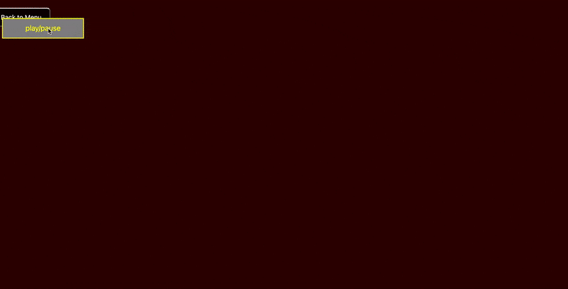

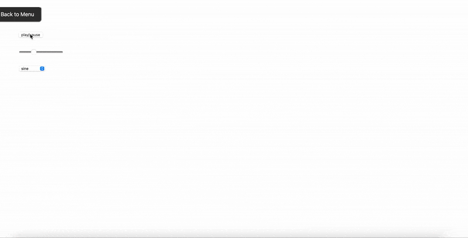
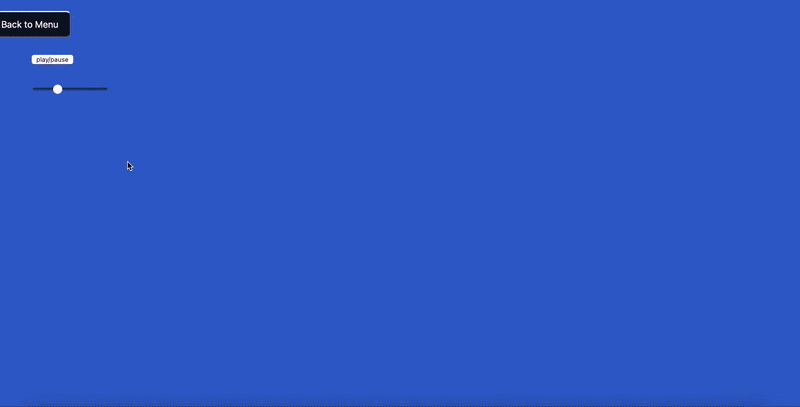
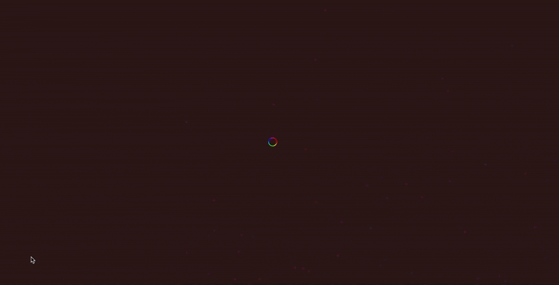
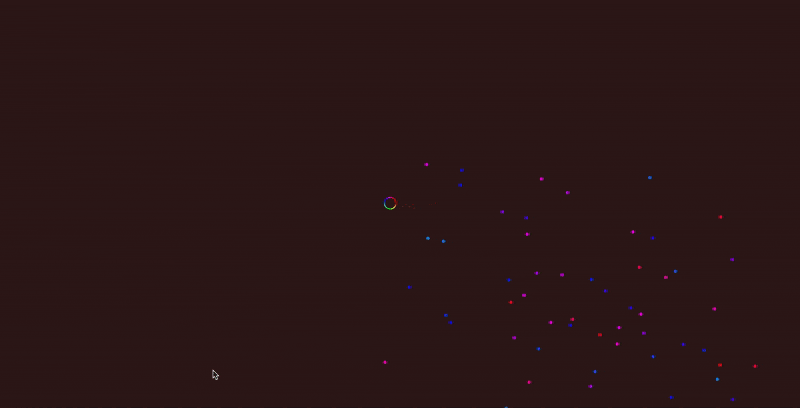
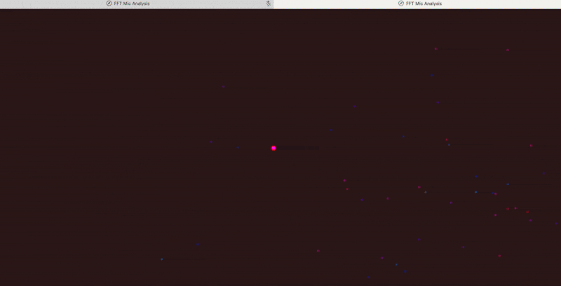
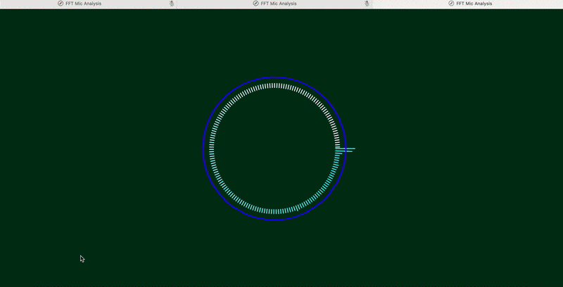
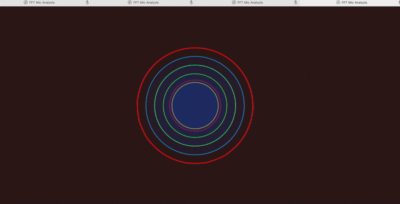


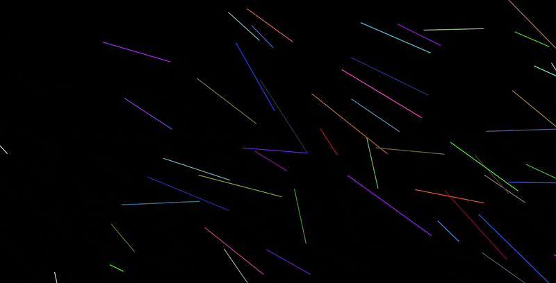

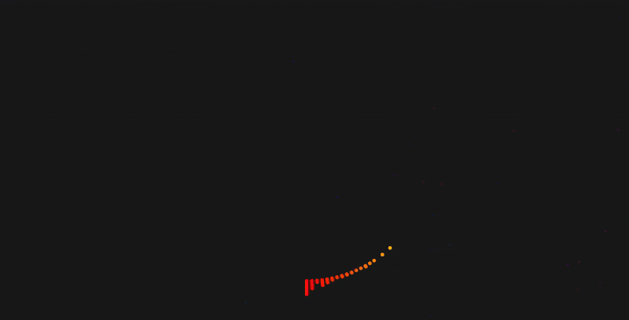
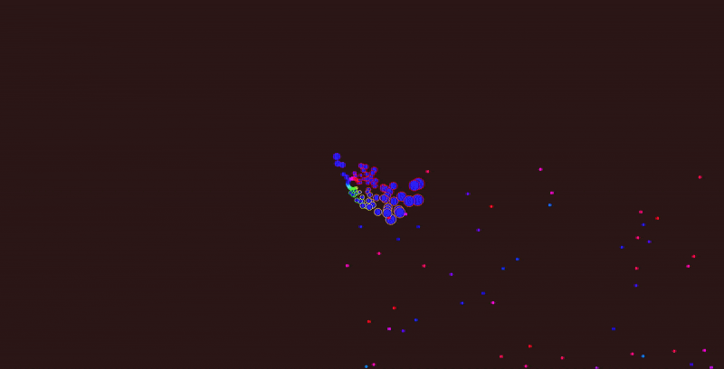